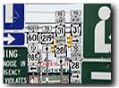
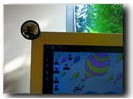

|
| ||
|
| ||
May 19, 1998
The following article was originally published in the Site Builder Network Magazine "Site Lights" column. (Now MSDN Online Voices "Design Discussion" column.)
I recently started to learn about feng shui  (pronounced fung shway), the ancient Chinese art of placement and study of the natural environment. Since I moved recently, into both a new home and a new office, I found learning about this ancient art very helpful and informative in bringing luck and well being through the layout and orientation of my new surroundings.
(pronounced fung shway), the ancient Chinese art of placement and study of the natural environment. Since I moved recently, into both a new home and a new office, I found learning about this ancient art very helpful and informative in bringing luck and well being through the layout and orientation of my new surroundings.
As I learn more about feng shui, I can't help but wonder if there is a feng shui or art of placement formulating itself on the Web today -- whether we can take this ancient art of placement and apply it not only to the physical space around us, but to the digital space in front of us. Where should Web designers be placing graphics, navigation, hyperlinks, and so forth to create harmony and a sense of natural order on a Web page?
What makes a site have strong feng shui? And what makes home pages evoke the feelings of xiong zai, which means "house of doom"?
Feng shui practitioners must understand, analyze, and interpret the productive and destructive behaviors of the five elements: water, earth, wood, fire, and metal. Each of these elements affects people's daily lives and has a profound effect on the others; for example, water puts out fire, fire melts metal, and so on. In contrast, Web authors and designers consider and interpret the productive and destructive behaviors of Web design elements: shapes, colors, structure, images, sounds, text, and so forth.
Some feng shui practitioners ask you to place potted plants in a room's north portion, as plants and the direction north are both of the water element. Similarly, you can add warm-colored curtains in the south to enhance the fire element in that particular location. Neutralizing elements are placed in locations of conflict. Web authors are advised to leverage various elements to enhance pages and the user experience. Here are some steps to identify neutralizing elements you can apply to your Web designs.
Isolate the various elements on your site. Each of the words below represents various aspects of the five feng shui elements; see if any relate to your site in any way. This list will help you narrow down the strong elements on your site.
| The site's strong element is: | The threat is from | Select a neutralizing element |
|---|---|---|
| Water | Earth absorbs water. Your site does not flow naturally; navigation is blocked. | Wood or metal |
| Earth | Wood penetrates earth. Your site is not reaching your readers, not getting their attention. | Metal or fire |
| Wood | Metal breaks wood. Your site is not easy to read, and is difficult to navigate; the imagery used distracts, confuses, and bewilders the user. | Fire or water |
| Fire | Water puts out fire. Your site lacks a metaphor, and is burning for a focal point. | Earth or wood |
| Metal | Fire melts metal. Your site does not provide enough hyperlinks, and lacks a focal point. | Water or earth |
A couple months ago, Jakob Nielsen, Ph.D., a Sun Microsystems Distinguished Engineer and the company's Web usability guru, talked to a group of Web designers at Microsoft. I found his presentation informative and insightful. With humor and intellect, Nielsen discussed usability issues of the Web and revealed information derived from four years of Web usability studies. One of the main points of his discussion was that users do not like long scrolling pages; they prefer text to be short and to the point.
The first rule of feng shui for the Web might be to keep your pages to a minimum and provide information without forcing the user to scroll. Keep the most important information within the physical scanning area of the viewer.
Think about what content you want the viewer to see first. Keep that first impression within the focal point of the screen. Place one major content element at the initial screen's focal point, which is the upper central portion of the open browser window.
Keep content scannable by using headlines, captions, or images that encourage additional focal points for viewers as they may scroll down the page.
Here's a list of sites that place different elements within the focal point.
A large amount of sites place branding in the focal point. This is very effective for corporate sites with strong brand recognition, such as Warner Brothers  .
.
Other sites place the project, community, or program heading in the focal point.
This month, the Communication Arts  Web site uses a strong headline graphic for an article on creativity in South America. The only other graphic on the page that somewhat competes for focus is an animated GIF used for self-promoting subscriptions to Communication Arts Magazine.
Web site uses a strong headline graphic for an article on creativity in South America. The only other graphic on the page that somewhat competes for focus is an animated GIF used for self-promoting subscriptions to Communication Arts Magazine.
Often, the site-branding graphic and the top-story headline are used in combination to draw focus -- for example, on news sites, such as the Seattle Times  or The New York Times
or The New York Times  .
.
The Peanut Roaster  uses an image map to set a scene for an online store. The image map serves as a navigation system and as the entry point for the site.
uses an image map to set a scene for an online store. The image map serves as a navigation system and as the entry point for the site.
CarTalk  uses an image map with multiple links from the scene to various parts of the site. This site has a bit of what could be considered clutter on the home page. So many choices and ways to navigate to various areas of the site can be a bit confusing -- but then, so can working on cars.
uses an image map with multiple links from the scene to various parts of the site. This site has a bit of what could be considered clutter on the home page. So many choices and ways to navigate to various areas of the site can be a bit confusing -- but then, so can working on cars.
A brightly colored navigation system is the focal point of the DrinkBoy.com  site.
site.
Volkswagen  uses advertisement animation for the New Beetle to keep the user focused.
uses advertisement animation for the New Beetle to keep the user focused.
What's in focus on your site?
Jakob Nielsen and his team came up with three main conclusions for authoring Web content.

Learning about feng shui has helped me realize that I live in a cluttered environment. I can't help but notice that the Web is full of clutter, as well. Apply some of the simple rules of feng shui, and you can reduce the clutter of your surroundings and your Web design.
To reduce clutter in your Web design, focus the choices you provide the user. Users can only truly comprehend up to six links at a time. For icons and buttons, work with simple imagery, not complex graphics that are difficult to decipher. Keep navigation buttons in a consistent place. Set up a grid or structured layout system, and maintain consistent placement through the entire site.
In another more recent study, Jakob Nielsen notes that Web users are getting ever more conservative, wanting Web sites to stick with established design conventions. Also, they're upgrading browsers much more slowly than in the past. Does this mean that Web users are expecting and demanding a consistent environment as they traverse Web pages? Does this mean we need to create a feng shui rule about placement of Web navigation elements?
Read Nielson's study  to explore this topic further. Nielsen has also co-authored, with John Markes, Concise, SCANNABLE, and Objective: How to Write for the Web
to explore this topic further. Nielsen has also co-authored, with John Markes, Concise, SCANNABLE, and Objective: How to Write for the Web  .
.

Okay, I'm hardly a self-proclaimed feng shui master -- but I encourage you to try taking a little feng shui home with you, or start with your office space  while you're working on your Web page. It's easy to do. For example, in my old office I had my back to the door for quite a while, which is not a good feng shui thing to do. The feng shui masters say that you are supposed to have the exit in view. To avoid spending a weekend re-arranging my office so my desk faces the door, and since I like looking out the window, I put a simple rear-view mirror on my monitor.
while you're working on your Web page. It's easy to do. For example, in my old office I had my back to the door for quite a while, which is not a good feng shui thing to do. The feng shui masters say that you are supposed to have the exit in view. To avoid spending a weekend re-arranging my office so my desk faces the door, and since I like looking out the window, I put a simple rear-view mirror on my monitor.
You also need to be sure that your Web site has an exit from all pages. Do not allow your users to hit a dead end.
Another thing that I did was move one of my plants so that I could watch it grow. It is important to stay connected with nature and water elements. Besides, I need a little oxygen in these sometimes-stuffy offices.
Nadja Vol Ochs is the design consultant in Microsoft's Developer Relations Group.
I personally think it has a great user interface that enables anyone to build clever animations in no time. Here is a sample I've created. For more information, read Cooking with Liquid Motion: An Easy Recipe for Animation.
Did you find this material useful? Gripes? Compliments? Suggestions for other articles? Write us!
© 1999 Microsoft Corporation. All rights reserved. Terms of use.